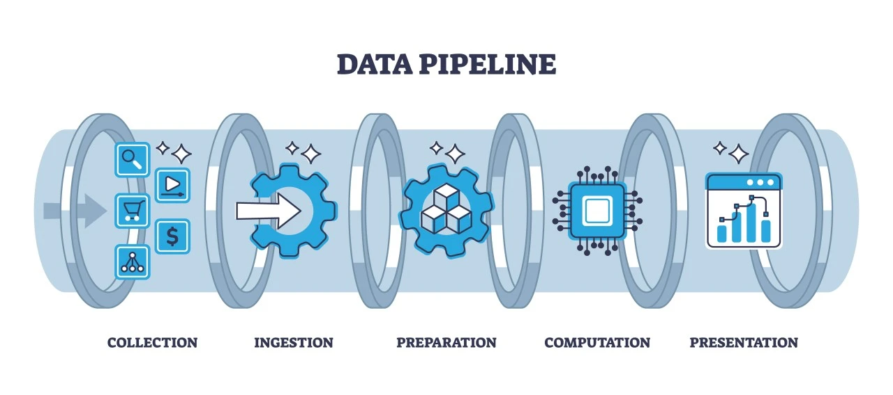

Almost all modern computer-vision fall detection systems follow the same high-level pipeline. Understanding this pipeline is the key to reading the research literature and evaluating commercial products.

One or more cameras (RGB, sometimes depth or thermal) continuously stream video. Frame rates of 15–30 fps are common. Many systems run the camera only when motion is detected (event-triggered) to save power and bandwidth.
The system first locates any person in the frame and then estimates the positions of key body joints (shoulders, hips, knees, ankles, etc.). Two popular families of methods are:
The output is usually a set of 2-D or 3-D coordinates for 17–33 landmarks per person.
A single frame is rarely enough. Falls are defined by rapid changes over time: a sudden drop of the center of mass, a change from vertical to horizontal torso, high acceleration, and a period of low motion afterward (“lying still”).
Typical features include:
A classifier (or a set of rules) decides “Fall” versus “Activities of Daily Living” (walking, sitting, bending, lying on a bed intentionally). Because false alarms are costly, many systems require the person to remain on the floor for 2–3 seconds before raising an alert.
When a fall is confirmed the system: